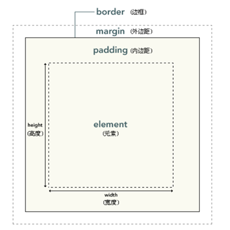

华师day02_am
一、CSS
CSS全称为“层叠样式表 (Cascading Style Sheets)”，它主要是用于定义HTML内容在浏览器内的显示样式，如文字大小、颜色、字体等。
使用：选择器{ 行为 }
1、使用：
①写在标签的style属性中：<p style=“font-size: 30px”>字体大小用px表示</p>
②写在style标签中(style标签一般写在head标签与title标签之间)：
<style type="text/css">
p{
color: blue;
}
</style>
③引入外部CSS文件：
<link rel="stylesheet" type="text/css" href="style.css">
2、常用选择器：
1）.基本选择器
/*通配符选择器*/ * { margin: 0; padding: 0; border: none; }
/*元素选择器*/ body { background: #eee; }
/*类选择器*/ .list { list-style: square; }
/*ID选择器*/ #list { width: 500px; margin: 0 auto; }
/*后代选择器*/ .list li { margin-top: 10px; background: #abcdef; }
2）.基本选择器扩展
/*子元素选择器*/ #wrap > .inner {color: pink;}
也可称为直接后代选择器,此类选择器只能匹配到直接后代，不能匹配到深层次的后代元素
/*相邻兄弟选择器*/ #wrap #first + .inner {color: #f00;}
它只会匹配紧跟着的兄弟元素
/*通用兄弟选择器*/ #wrap #first ~ div { border: 1px solid;}
它会匹配所有的兄弟元素(不需要紧跟)
/*选择器分组*/ h1,h2,h3{color: pink;}
此处的逗号我们称之为结合符
3）.属性选择器
/*存在和值属性选择器*/
[attr]：该选择器选择包含 attr 属性的所有元素，不论 attr 的值为何。
[attr=val]：该选择器仅选择 attr 属性被赋值为 val 的所有元素。
[attr~=val]：表示带有以 attr 命名的属性的元素，并且该属性是一个以空格作为分隔的值列表，其中至少一个值为val。
/*子串值属性选择器*/
[attr|=val] : 选择attr属性的值是val（包括val）或以val-开头的元素。
[attr^=val] : 选择attr属性的值以val开头（包括val）的元素。
[attr$=val] : 选择attr属性的值以val结尾（包括val）的元素。
[attr*=val] : 选择attr属性的值中包含字符串val的元素。
4）.伪类与伪元素选择器
/*链接伪类*/ 注意:link，:visited，:target是作用于链接元素的！
:link 表示作为超链接，并指向一个未访问的地址的所有锚
:visited 表示作为超链接，并指向一个已访问的地址的所有锚
:target 代表一个特殊的元素，它的id是URI的片段标识符
/*动态伪类*/ 注意:hover，:active基本可以作用于所有的元素！
:hover 表示悬浮到元素上
:active 表示匹配被用户激活的元素（点击按住时）
由于a标签的:link和:visited可以覆盖了所有a标签的状态，所以当:link，:visited，:hover，:active同时出现在a标签
身上时 :link和:visited不能放在最后！！！
隐私与:visited选择器
只有下列的属性才能被应用到已访问链接：
color
background-color
border-color
/*表单相关伪类*/
:enabled 匹配可编辑的表单
:disable 匹配被禁用的表单
:checked 匹配被选中的表单
:focus 匹配获焦的表单
/*结构性伪类*/
index的值从1开始计数！！！！
index可以为变量n(只能是n)
index可以为even odd
#wrap ele:nth-child(index) 表示匹配#wrap中第index的子元素 这个子元素必须是ele
#wrap ele:nth-of-type(index) 表示匹配#wrap中第index的ele子元素
除此之外:nth-child和:nth-of-type有一个很重要的区别！！
nth-of-type以元素为中心！！！
:nth-child(index)系列
:first-child
:last-child
:nth-last-child(index)
:only-child (相对于:first-child:last-child 或者 :nth-child(1):nth-last-child(1))
:nth-of-type(index)系列
:first-of-type
:last-of-type
:nth-last-type(index)
:only-of-type (相对于:first-of-type:last-of-type 或者 :nth-of-type(1):nth-last-of-type(1))
:not
:empty(内容必须是空的，有空格都不行，有attr没关系)
/*伪元素*/
::after
::before
::firstLetter
::firstLine
::selection
3、
- 常用样式：
- 背景色
- 可以使用background-color 为元素设置背景色。这个属性接受任何合法的颜色值。
- 背景图像
- 要把图像放入背景，需要使用 background-image 属性。background-image 属性的默认值是 none，表示背景上没有放置任何图像。
- 如： body {background-image: url(/i/eg_bg_04.gif);}
- 缩进文本
- 把 Web 页面上的段落的第一行缩进，这是一种最常用的文本格式化效果。
- CSS 提供了 text-indent 属性，该属性可以方便地实现文本缩进。
- 如： p {text-indent: 5em;}如：p {background-color: gray;}
- 设置链接的样式
- 能够设置链接样式的 CSS 属性有很多种（例如 color, font-family, background 等等）。
- 链接的特殊性在于能够根据它们所处的状态来设置它们的样式。
- 链接的四种状态：
- a:link - 普通的、未被访问的链接
- a:visited - 用户已访问的链接
- a:hover - 鼠标指针位于链接的上方
- a:active - 链接被点击的时刻
- 如：
- a:link {color:#FF0000;} /* 未被访问的链接 */
- a:visited {color:#00FF00;} /* 已被访问的链接 */
- a:hover {color:#FF00FF;} /* 鼠标指针移动到链接上 */
- a:active {color:#0000FF;} /* 正在被点击的链接 */
- 表格边框
- 如需在 CSS 中设置表格边框，请使用 border 属性。
- 下面的例子为 table、th 以及 td 设置了蓝色边框：
- 如：table, th, td { border: 1px solid blue; }
- 列表类型
- 要影响列表的样式，最简单（同时支持最充分）的办法就是改变其标志类型。
- 例如，在一个无序列表中，列表项的标志 (marker) 是出现在各列表项旁边的圆点。在有序列表中，标志可能是字母、数字或另外某种计数体系中的一个符号。
- 要修改用于列表项的标志类型，可以使用属性 list-style-type：
- 如：ul {list-style-type : square}
4、框模型
- CSS 框模型 (Box Model) 规定了元素框处理元素内容、内边距、边框 和 外边距的方式。
- 
- 在 CSS 中，width 和 height 指的是内容区域的宽度和高度。增加内边距、边框和外边距不会影响内容区域的尺寸，但是会增加元素框的总尺寸。

5、浮动和定位：
- CSS 定位和浮动
- CSS 为定位和浮动提供了一些属性，利用这些属性，可以建立列式布局，将布局的一部分与另一部分重叠，还可以完成多年来通常需要使用多个表格才能完成的任务。
- CSS 定位机制
- CSS 有三种基本的定位机制：普通流、浮动和绝对定位。
- 块级框从上到下一个接一个地排列，框之间的垂直距离是由框的垂直外边距计算出来。
- CSS position 属性
- 通过使用 position 属性，我们可以选择 4 种不同类型的定位，这会影响元素框生成的方式。
- CSS 相对定位
- 对定位是一个非常容易掌握的概念。如果对一个元素进行相对定位，它将出现在它所在的位置上。然后，可以通过设置垂直或水平位置，让这个元素“相对于”它的起点进行移动。
- 如果将 top 设置为 20px，那么框将在原位置顶部下面 20 像素的地方。如果 left 设置为 30 像素，那么会在元素左边创建 30 像素的空间，也就是将元素向右移动。
- 如： #box_relative {
position: relative;
left: 30px;
top: 20px;
}
- 注意，在使用相对定位时，无论是否进行移动，元素仍然占据原来的空间。因此，移动元素会导致它覆盖其它框。

- CSS 绝对定位
- 绝对定位使元素的位置与文档流无关，因此不占据空间。这一点与相对定位不同，相对定位实际上被看作普通流定位模型的一部分，因为元素的位置相对于它在普通流中的位置。
- 普通流中其它元素的布局就像绝对定位的元素不存在一样：如： #box_relative {position: absolute;left: 30px;top: 20px;}因为绝对定位的框与文档流无关，所以它们可以覆盖页面上的其它元素。可以通过设置 z-index 属性来控制这些框的堆放次序。

6、CSS3中的新特性
- CSS3 圆角边框
在 CSS2 中添加圆角矩形需要技巧。我们必须为每个圆角使用不同的图片。
在 CSS3 中，创建圆角是非常容易的。
在 CSS3 中，border-radius 属性用于创建圆角：
如：div {
border:2px solid;
border-radius:25px;
}
- CSS3 边框阴影
在 CSS3 中，box-shadow 用于向方框添加阴影
div { box-shadow: 10px 10px 5px #888888; }
- CSS3 文本阴影在 CSS3 中，text-shadow 可向文本应用阴影。能够规定水平阴影、垂直阴影、模糊距离，以及阴影的颜色：h1 { text-shadow: 5px 5px 5px #FF0000; }
- CSS3 2D 转换
- CSS3 3D 转换
- CSS3 过渡
- CSS3 动画
- CSS3 多列
- CSS3 用户界面